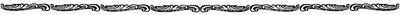

Next day they fell in with more sails, all circling slowly from the east northerly towards the west. But just when they expected to make the shoals by the Virgin the fog shut down, and they anchored, surrounded by the tinklings of invisible bells. There was not much fishing, but occasionally dory met dory in the fog and exchanged news.
That night, a little before dawn, Dan and Harvey, who had been sleeping most of the day, tumbled out to "hook" fried pies. There was no reason why they should not have taken them openly; but they tasted better so, and it made the cook angry. The heat and smell below drove them on deck with their plunder, and they found Disko at the bell, which he handed over to Harvey.
"Keep her goin'," said he. "I mistrust I hear somethin'. Ef it's anything, I'm best where I am so's to get at things."
It was a forlorn little jingle; the thick air seemed to pinch it off, and in the pauses Harvey heard the muffled shriek of a liner's siren, and he knew enough of the Banks to know what that meant. It came to him, with horrible distinctness, how a boy in a cherry-coloured jersey—he despised fancy blazers now with all a fisher-man's contempt—how an ignorant, rowdy boy had once said it would be "great" if a steamer ran down a fishing-boat. That boy had a stateroom with a hot and cold bath, and spent ten minutes each morning picking over a gilt-edged bill of fare. And that same boy—no, his very much older brother—was up at four of the dim dawn in streaming, crackling oilskins, hammering, literally for the dear life, on a bell smaller than the steward's breakfast-bell, while somewhere close at hand a thirty-foot steel stem was storming along at twenty miles an hour! The bitterest thought of all was that there were folks asleep in dry, upholstered cabins who would never learn that they had massacred a boat before breakfast. So Harvey rang the bell.
"Yes, they slow daown one turn o' their blame propeller," said Dan, applying himself to Manuel's conch, "fer to keep inside the law, an' that's consolin' when we're all at the bottom. Hark to her! She's a humper!"
"Aooo-whoo-whupp!" went the siren. "Wingle-tingle-tink," went the bell. "Graaa-ouch!" went the conch, while sea and sky were all mired up in milky fog. Then Harvey felt that he was near a moving body, and found himself looking up and up at the wet edge of a cliff-like bow, leaping, it seemed, directly over the schooner. A jaunty little feather of water curled in front of it, and as it lifted it showed a long ladder of Roman numerals-XV., XVI., XVII., XVIII., and so forth—on a salmon-coloured gleaming side. It tilted forward and downward with a heart-stilling "Ssssooo"; the ladder disappeared; a line of brass-rimmed port-holes flashed past; a jet of steam puffed in Harvey's helplessly uplifted hands; a spout of hot water roared along the rail of the We're Here, and the little schooner staggered and shook in a rush of screw-torn water, as a liner's stern vanished in the fog. Harvey got ready to faint or be sick, or both, when he heard a crack like a trunk thrown on a sidewalk, and, all small in his ear, a far-away telephone voice drawling: "Heave to! You've sunk us!"
"Is it us?" he gasped.
"No! Boat out yonder. Ring! We're goin' to look," said Dan, running out a dory.
In half a minute all except Harvey, Penn, and the cook were overside and away. Presently a schooner's stump-foremast, snapped clean across, drifted past the bows. Then an empty green dory came by, knocking on the We're Here's side, as though she wished to be taken in. Then followed something, face down, in a blue jersey, but—it was not the whole of a man. Penn changed colour and caught his breath with a click. Harvey pounded despairingly at the bell, for he feared they might be sunk at any minute, and he jumped at Dan's hail as the crew came back.
"The Jennie Cushman," said Dan, hysterically, "cut clean in half—graound up an' trompled on at that! Not a quarter of a mile away. Dad's got the old man. There ain't any one else, and—there was his son, too. Oh, Harve, Harve, I can't stand it! I've seen—" He dropped his head on his arms and sobbed while the others dragged a gray-headed man aboard.
"What did you pick me up for?" the stranger groaned. "Disko, what did you pick me up for?"
Disko dropped a heavy hand on his shoulder, for the man's eyes were wild and his lips trembled as he stared at the silent crew. Then up and spoke Pennsylvania Pratt, who was also Haskins or Rich or McVitty when Uncle Salters forgot; and his face was changed on him from the face of a fool to the countenance of an old, wise man, and he said in a strong voice: "The Lord gave, and the Lord hath taken away; blessed be the name of the Lord! I was—I am a minister of the Gospel. Leave him to me."
"Oh, you be, be you?" said the man. "Then pray my son back to me! Pray back a nine-thousand-dollar boat an' a thousand quintal of fish. If you'd left me alone my widow could ha' gone on to the Provident an' worked fer her board, an' never known—an' never known. Now I'll hev to tell her."
"There ain't nothin' to say," said Disko. "Better lie down a piece, Jason Olley."
When a man has lost his only son, his summer's work, and his means of livelihood, in thirty counted seconds, it is hard to give consolation.
"All Gloucester men, wasn't they?" said Tom Platt, fiddling helplessly with a dory-becket.
"Oh, that don't make no odds," said Jason, wringing the wet from his beard. "I'll be rowin' summer boarders araound East Gloucester this fall." He rolled heavily to the rail, singing:
"Come with me. Come below!" said Penn, as though he had a right to give orders. Their eyes met and fought for a quarter of a minute.
"I dunno who you be, but I'll come," said Jason submissively. "Mebbe I'll get back some o' the—some o' the-nine thousand dollars." Penn led him into the cabin and slid the door behind.
"That ain't Penn," cried Uncle Salters. "It's Jacob Boiler, an'—he's remembered Johnstown! I never seed such eyes in any livin' man's head. What's to do naow? What'll I do naow?"
They could hear Penn's voice and Jason's together. Then Penn's went on alone, and Salters slipped off his hat, for Penn was praying. Presently the little man came up the steps, huge drops of sweat on his face, and looked at the crew. Dan was still sobbing by the wheel.
"He don't know us," Salters groaned. "It's all to do over again, checkers and everything—an' what'll he say to me?"
Penn spoke; they could hear that it was to strangers. "I have prayed," said he. "Our people believe in prayer. I have prayed for the life of this man's son. Mine were drowned before my eyes—she and my eldest and—the others. Shall a man be more wise than his Maker? I prayed never for their lives, but I have prayed for this man's son, and he will surely be sent him."
Salters looked pleadingly at Penn to see if he remembered.
"How long have I been mad?" Penn asked suddenly. His mouth was twitching.
"Pshaw, Penn! You weren't never mad," Salters began "Only a little distracted like."
"I saw the houses strike the bridge before the fires broke out. I do not remember any more. How long ago is that?"
"I can't stand it! I can't stand it!" cried Dan, and Harvey whimpered in sympathy.
"Abaout five year," said Disko, in a shaking voice.
"Then I have been a charge on some one for every day of that time. Who was the man?"
Disko pointed to Salters.
"Ye hain't—ye hain't!" cried the sea-farmer, twisting his hands together. "Ye've more'n earned your keep twice-told; an' there's money owin' you, Penn, besides ha'af o' my quarter-share in the boat, which is yours fer value received."
"You are good men. I can see that in your faces. But—"
"Mother av Mercy," whispered Long Jack, "an' he's been wid us all these trips! He's clean bewitched."
A schooner's bell struck up alongside, and a voice hailed through the fog: "O Disko! 'Heard abaout the Jennie Cushman?"
"They have found his son," cried Penn. "Stand you still and see the salvation of the Lord!"
"Got Jason aboard here," Disko answered, but his voice quavered. "There—warn't any one else?"
"We've fund one, though. 'Run acrost him snarled up in a mess o' lumber thet might ha' bin a foc'sle. His head's cut some."
"Who is he?"
The We're Here's heart-beats answered one another.
"Guess it's young Olley," the voice drawled.
Penn raised his hands and said something in German. Harvey could have sworn that a bright sun was shining upon his lifted face; but the drawl went on: "Sa-ay! You fellers guyed us consid'rable t'other night."
"We don't feel like guyin' any now," said Disko.
"I know it; but to tell the honest truth we was kinder—kinder driftin' when we run agin young Olley."
It was the irrepressible Carrie Pitman, and a roar of unsteady laughter went up from the deck of the We're Here.
"Hedn't you 'baout's well send the old man aboard? We're runnin' in fer more bait an' graound-tackle. Guess you won't want him, anyway, an' this blame windlass work makes us short-handed. We'll take care of him. He married my woman's aunt."
"I'll give you anything in the boat," said Troop.
"Don't want nothin', 'less, mebbe, an anchor that'll hold. Say! Young Olley's gittin' kinder baulky an' excited. Send the old man along."
Penn waked him from his stupor of despair, and Tom Platt rowed him over. He went away without a word of thanks, not knowing what was to come; and the fog closed over all.
"And now," said Penn, drawing a deep breath as though about to preach. "And now"—the erect body sank like a sword driven home into the scabbard; the light faded from the overbright eyes; the voice returned to its usual pitiful little titter—"and now," said Pennsylvania Pratt, "do you think it's too early for a little game of checkers, Mr. Salters?"
"The very thing—the very thing I was goin' to say myself," cried Salters promptly. "It beats all, Penn, how ye git on to what's in a man's mind."
The little fellow blushed and meekly followed Salters forward.
"Up anchor! Hurry! Let's quit these crazy waters," shouted Disko, and never was he more swiftly obeyed.
"Now what in creation d'ye suppose is the meanin' o' that all?" said Long Jack, when they were working through the fog once more, damp, dripping, and bewildered.
"The way I sense it," said Disko, at the wheel, "is this: The Jennie Cushman business comin' on an empty stummick—"
"H-he saw one of them go by," sobbed Harvey.
"An' that, o' course, kinder hove him outer water, julluk runnin' a craft ashore; hove him right aout, I take it, to rememberin' Johnstown an' Jacob Boiler an' such-like reminiscences. Well, consolin' Jason there held him up a piece, same's shorin' up a boat. Then, bein' weak, them props slipped an' slipped, an' he slided down the ways, an' naow he's water-borne agin. That's haow I sense it."
They decided that Disko was entirely correct.
"'Twould ha' bruk Salters all up," said Long Jack, "if Penn had stayed Jacob Boilerin'. Did ye see his face when Penn asked who he'd been charged on all these years? How is ut, Salters?"
"Asleep—dead asleep. Turned in like a child," Salters replied, tiptoeing aft. "There won't be no grub till he wakes, natural. Did ye ever see sech a gift in prayer? He everlastin'ly hiked young Olley outer the ocean. Thet's my belief. Jason was tur'ble praoud of his boy, an' I mistrusted all along 'twas a jedgment on worshippin' vain idols."
"There's others jes as sot," said Disko.
"That's difrunt," Salters retorted quickly. "Penn's not all caulked, an' I ain't only but doin' my duty by him."
They waited, those hungry men, three hours, till Penn reappeared with a smooth face and a blank mind. He said he believed that he had been dreaming. Then he wanted to know why they were so silent, and they could not tell him.
Disko worked all hands mercilessly for the next three or four days; and when they could not go out, turned them into the hold to stack the ship's stores into smaller compass, to make more room for the fish. The packed mass ran from the cabin partition to the sliding door behind the foc'sle stove; and Disko showed how there is great art in stowing cargo so as to bring a schooner to her best draft. The crew were thus kept lively till they recovered their spirits; and Harvey was tickled with a rope's end by Long Jack for being, as the Galway man said, "sorrowful as a sick cat over fwhat couldn't be helped." He did a great deal of thinking in those weary days, and told Dan what he thought, and Dan agreed with him—even to the extent of asking for fried pies instead of hooking them.
But a week later the two nearly upset the Hattie S. in a wild attempt to stab a shark with an old bayonet tied to a stick. The grim brute rubbed alongside the dory begging for small fish, and between the three of them it was a mercy they all got off alive.
At last, after playing blindman's-buff in the fog, there came a morning when Disko shouted down the foc'sle: "Hurry, boys! We're in taown!"
